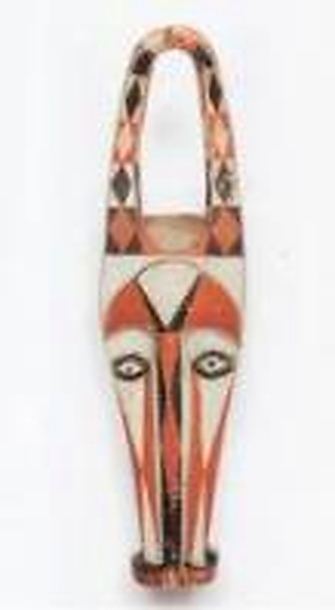
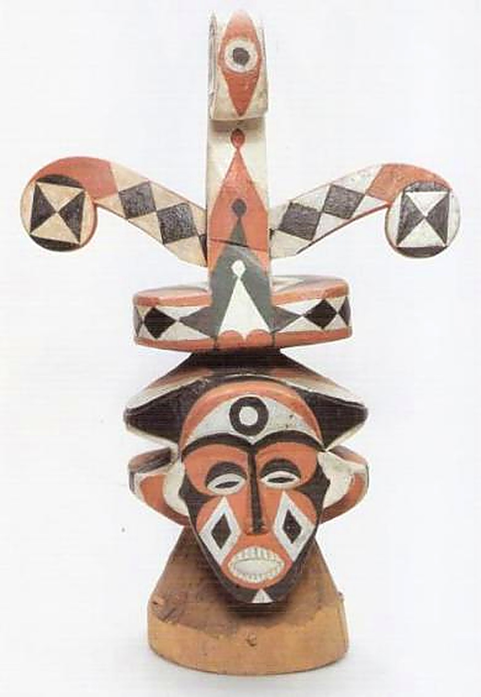

Origins of the Canton
Bonambela is the kingdom of the legendary King Dika Mpondo, one of the signatories of the 1884 Germano-Duala treaty — the founding act of modern Cameroon — and also the canton of H.M. King Betote Dika, who presided over the Ngondo from 1946 to 1976. This vast territory of 20 villages is divided into two large entities: Mbela Mbengue in the north and Mbela Jedu in the south. "Mbela", in the Duala language, means Eagle: it is under this emblem, that of the king of birds who soars higher than any other creature, that Akwa Canton is defined.
Mbela Mbengue brings together the settlements of Bongongi and Dikolo, while Mbela Jedu unites the villages of Bonewonda, Bonamouang, Bonamoussadi, Bonangang, Bangue, Bonabeyikè and Bonangando. Historically, Akwa — and Mbela Mbengue in particular — has hosted most of Douala's commercial structures: hotels, shopping centres, port quays, and along Boulevard Leclerc, the great historic trading houses (Woermann, Jai Hamit, John Holt, R.W. King, SCOA...). Enthroned in 2023, His Majesty Dr Louis Din Dika Akwa, a physician by training, succeeds his father Charles David Din Dika Akwa III. That same September, he presided over the very first Forum of Young Elites of the canton, sharing a vision structured around commissions dedicated to royal diplomacy, finance, education and employment, and marketing and communication.
🦅 The Royal Eagle
The Superior Chief
The Ngondo in Pictures

